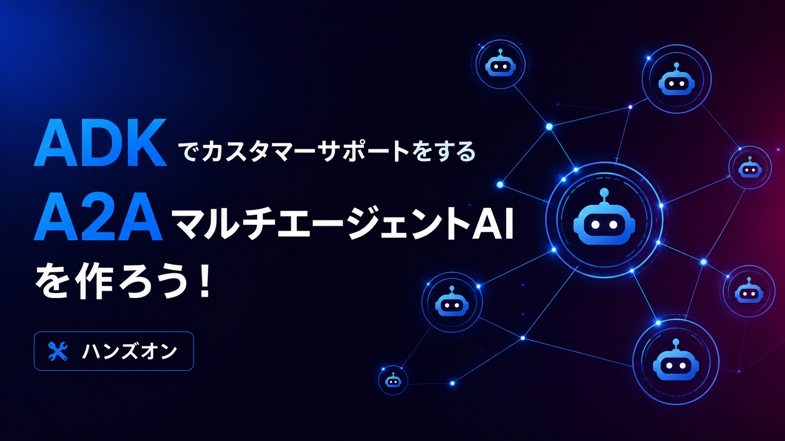
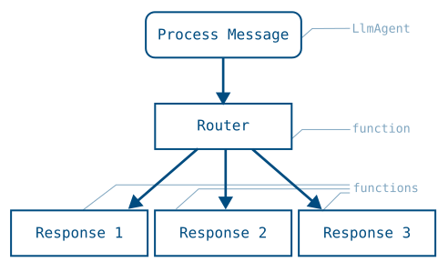
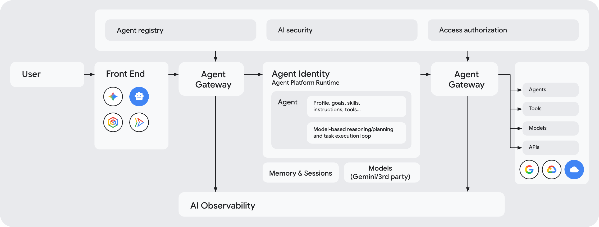
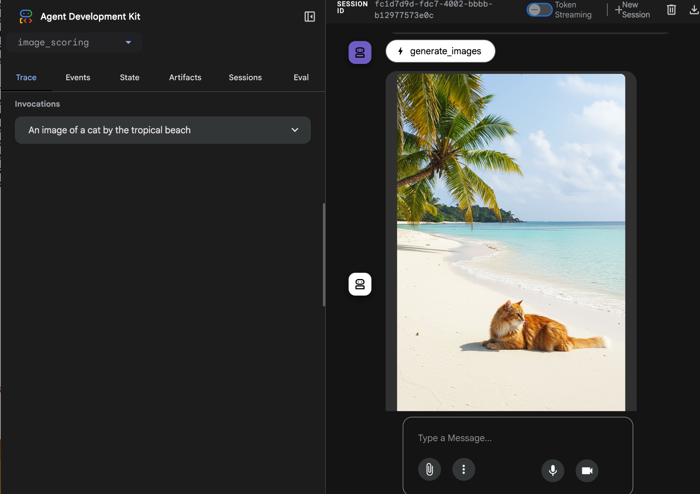
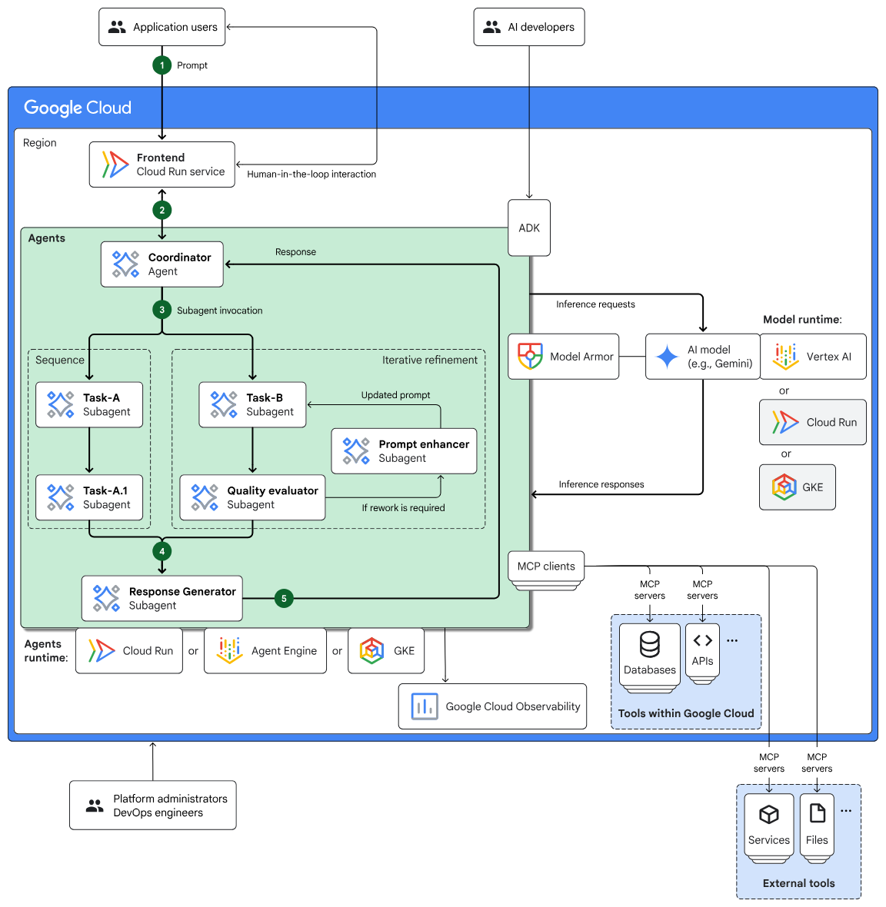

このコードラボでは、架空の採用管理 SaaS「HireNest ATS」のサポート問い合わせを題材に、専門エージェントが協調して調査するマルチエージェント AI を作ります。
このコードラボで作るもの
完成すると、Support Coordinator Agent が問い合わせを受け取り、Ticket History Agent、Knowledge Base Agent、Account Context Agent、Incident Status Agent、Diagnostics Agent、Escalation Policy Agent に調査を依頼します。各専門エージェントは A2A サービスとして動き、Coordinator は調査結果を統合して Support Case Resolution Package を返します。
このコードラボで学ぶこと
- ADK 2.0 の graph-based Workflow を使ってエージェントの制御フローを構築する方法
- Python 関数を tool として ADK Agent に接続する方法
- A2A Agent Card を公開し、
RemoteA2aAgentで別エージェントを呼び出す方法 output_schemaで triage 結果を構造化する方法RequestInputで Human-in-the-loop の clarification ルートを作る方法- Agent Runtime に参加者 ID 付きのエージェントをデプロイする方法
- 自分がデプロイした Agent Runtime リソースだけを削除する方法
必要なもの
- Google Cloud Shell
- ワークショップ運営が指定する Google Cloud project ID
- IAM 登録済みの Google アカウント
- connpass ID
前提知識
- Python の基本的な読み書き
- ターミナルでコマンドを実行する基本操作
- LLM と tool calling の基本的な理解
このコードラボで扱わないこと
- 実顧客データや本番運用向けのセキュリティ設計
- Discord webhook などの外部通知の本番設定
- Gemini Enterprise Agent Search のコーパス作成
- Agent Gateway、Memory Bank、評価基盤の本格運用
このステップでは、Cloud Shell で配布コードを開き、依存関係と .env を準備します。セットアップはこのステップにまとめます。
Cloud Shell を開く
Google Cloud Console で、ワークショップ運営が指定した Google Cloud project を選択します。画面右上の Cloud Shell アイコンを押して Cloud Shell を起動します。
Cloud Shell が開いたら、project が正しいことを確認します。
gcloud config get-value project
期待される出力:
your-workshop-project-id
違う project が表示された場合は、運営が指定した project ID に切り替えます。
gcloud config set project YOUR_WORKSHOP_PROJECT_ID
配布コードを開く
ワークショップで案内されたリポジトリを Cloud Shell に clone します。
git clone WORKSHOP_REPOSITORY_URL
cd education/create-multi-agent/repos/template
すでに配布コードを Cloud Shell に展開済みの場合は、template ディレクトリへ移動します。
cd create-multi-agent/repos/template
setup script を実行する
scripts/setup.sh は connpass ID を聞き、.env と scripts/.state を作成し、uv sync --extra dev を実行します。
./scripts/setup.sh
プロンプトが表示されたら、自分の connpass ID を入力します。
期待される出力:
connpass ID: alice_123
Setup complete for [alice_123].
scripts/.state には参加者 ID が保存されます。Agent Runtime へデプロイするとき、この ID が Agent 名の prefix になります。
[alice_123] Support Coordinator Agent
[alice_123] Ticket History Agent
.env を確認する
.env が次の形になっていることを確認します。GOOGLE_CLOUD_PROJECT は運営が指定した project ID にします。
.env
ADK_MODEL=gemini-2.5-flash
HIRENEST_PARTICIPANT_ID=alice_123
TICKET_HISTORY_A2A_URL=http://localhost:8101
KNOWLEDGE_BASE_A2A_URL=http://localhost:8102
ACCOUNT_CONTEXT_A2A_URL=http://localhost:8103
INCIDENT_STATUS_A2A_URL=http://localhost:8104
ESCALATION_POLICY_A2A_URL=http://localhost:8105
DIAGNOSTICS_A2A_URL=http://localhost:8107
GOOGLE_API_KEY=
GOOGLE_GENAI_USE_VERTEXAI=true
GOOGLE_CLOUD_PROJECT=YOUR_WORKSHOP_PROJECT_ID
GOOGLE_CLOUD_LOCATION=us-central1
HIRENEST_TRACE_TO_CLOUD=false
HIRENEST_AGENT_SEARCH_SERVING_CONFIG=
HIRENEST_DISCORD_DRY_RUN=false
HIRENEST_DISCORD_WEBHOOK_URL=
HIRENEST_DATA_DIR=
ADK を import できることを確認する
uv run --extra dev python - <<'PY'
import google.adk
print("ADK is ready")
PY
期待される出力:
ADK is ready
このステップでは、今回使う ADK 2.0 の考え方を確認します。ADK 2.0 では、Agent、Tool、Python 関数、Human input、別 Workflow を graph の node として組み合わせられます。
Graph-based Workflow

ADK 2.0 の中心は Workflow Runtime です。Workflow(name=..., edges=[...]) で graph を定義し、START から node をつなぎます。node には ADK Agent、Python 関数、JoinNode、別 Workflow を置けます。
今回の Coordinator では、最初に triage を行い、情報が足りない場合は clarification に進みます。情報が足りている場合は専門エージェントへ並列調査を依頼します。
Route と Human-in-the-loop

ADK の graph route では、関数 node が Event(route=...) を返し、次の edge で route と node を対応付けます。このコードラボでは ready_for_investigation=false のときに retry route を返し、RequestInput で人間に追加情報を依頼します。
Parallel と JoinNode

複数の START edge を定義すると、複数 node が並列に開始されます。JoinNode は upstream node の出力を待ち、複数の調査結果を 1 つの入力として次の node に渡します。
このコードラボでは、次の形の graph を作ります。
Triage / Planning
|- retry -> Human clarification -> Triage / Planning
`- default -> Parallel Investigation -> Synthesis -> Escalation -> Final Package
このステップでは、A2A が何を標準化するのかを確認します。

A2A が扱うもの
A2A は、エージェント同士が互いの内部実装を公開せずに、発見、通信、タスク委譲、成果物交換を行うためのプロトコルです。ADK、LangGraph、CrewAI、独自実装など、異なる実装のエージェントをつなぐ相互運用レイヤーとして使えます。
このコードラボでは、各専門エージェントを A2A Server として起動します。Coordinator は A2A Client として、RemoteA2aAgent から専門エージェントの Agent Card を読み、調査タスクを依頼します。
Agent Card
Agent Card は、エージェントの名前、説明、endpoint、capabilities、skills などを表す JSON metadata です。ローカル起動した Ticket History Agent の Agent Card は、次の URL で確認できます。
http://localhost:8101/.well-known/agent-card.json
この URL は後のステップで実際に確認します。
このステップでは、Agent Runtime へデプロイする理由を確認します。

Agent Runtime
Gemini Enterprise Agent Platform は、エージェントの作成、デプロイ、状態管理、評価、監視、ガバナンス、他エージェント連携を扱う企業向けのエージェント基盤です。このコードラボでは、その中の Agent Runtime を使って ADK / A2A エージェントを Google Cloud 上にデプロイします。
今回のハンズオンでは、参加者全員が同じ Google Cloud project にデプロイします。そのため、デプロイ script は connpass ID を display name の prefix に入れます。
[alice_123] Support Coordinator Agent
[alice_123] Ticket History Agent
この prefix により、他の参加者のエージェントと名前が衝突しにくくなり、cleanup script で自分のエージェントだけを削除できます。
このリポジトリでの役割分担
repos/template には、完成形のうち一部だけが TODO として残っています。
src/hirenest_support/tickets.py チケット検索 tool
agents/ticket_history/agent.py Ticket History Agent
agents/coordinator/schemas.py structured output schema
agents/coordinator/steps.py Human-in-the-loop route
agents/coordinator/agent.py Coordinator Workflow
その他の専門エージェント、データ、ポリシー判定、通信文の安全チェック、デプロイ script は配布済みです。
このステップでは、過去のサポートチケットを検索する tool 関数を実装します。まずは単純なキーワード一致で実装し、tool の品質がエージェントの回答に影響することを後で確認できるようにします。
tickets.py を編集する
src/hirenest_support/tickets.py を開きます。search_ticket_history() と _terms() を次のように実装します。
src/hirenest_support/tickets.py
from __future__ import annotations
+import re
from typing import Any
from hirenest_support.loaders import load_jsonl
from hirenest_support.paths import DATA_DIR
def search_ticket_history(query: str, limit: int = 4) -> list[dict[str, Any]]:
- # TODO
- return []
+ query_terms = _terms(query)
+ scored: list[tuple[int, dict[str, Any]]] = []
+
+ for record in _load_ticket_records():
+ record_text = " ".join(
+ [
+ str(record.get("ticket_id", "")),
+ str(record.get("customer_id", "")),
+ str(record.get("category", "")),
+ str(record.get("severity", "")),
+ str(record.get("subject", "")),
+ str(record.get("summary", "")),
+ str(record.get("cause", "")),
+ str(record.get("resolution", "")),
+ " ".join(record.get("tags", [])),
+ ]
+ )
+ score = len(query_terms & _terms(record_text))
+ if score > 0:
+ scored.append((score, record))
+
+ ranked = sorted(scored, key=lambda item: item[0], reverse=True)[:limit]
+ return [_enrich_ticket(record, score) for score, record in ranked]
+
+
+def _terms(text: str) -> set[str]:
+ return set(re.findall(r"[a-z0-9]+", text.lower()))
この実装は、問い合わせ文とチケット本文の共通単語数でチケットを順位付けします。まだ顧客 ID やカテゴリ推定は使いませんが、tool として動作する最小の検索を作れます。
チケット検索をテストする
uv run --extra dev pytest tests/test_search_and_redaction.py::test_ticket_search_prioritizes_customer_and_category
期待される出力:
tests/test_search_and_redaction.py . [100%]
エラーが出る場合は、import re を追加したか、_terms() を search_ticket_history() より下に追加したかを確認します。
tool の出力を確認する
uv run --extra dev python - <<'PY'
from hirenest_support.tickets import search_ticket_history
tickets = search_ticket_history(
"Apex Robotics interview invitation email not delivered to all candidates",
limit=2,
)
for ticket in tickets:
print(ticket["ticket_id"], ticket["category"], ticket["match_score"])
PY
期待される出力:
TCK-4101 candidate_communication 10
2 行目以降の ticket ID や score は、同点のチケットにより変わることがあります。
このステップでは、前のステップで作った search_ticket_history() を ADK Agent の tool として接続します。
agent.py を編集する
agents/ticket_history/agent.py を開きます。root_agent の instruction と tools を次のように変更します。
agents/ticket_history/agent.py
root_agent = Agent(
name="ticket_history_agent",
model=model_name(),
description="Searches HireNest historical support tickets and escalation cases.",
- instruction="TODO",
- tools=[], # TODO
+ instruction=(
+ "You are the Ticket History Agent for HireNest ATS support. "
+ "Use search_similar_tickets to find relevant historical tickets. "
+ "After identifying the most relevant ticket IDs, use retrieve_ticket_thread "
+ "for the top one or two tickets. Return similar tickets, similarities, "
+ "differences, past causes, resolutions, useful internal comments, "
+ "and any remaining missing evidence. Do not decide severity or write "
+ "the final customer response."
+ ),
+ tools=[search_similar_tickets, retrieve_ticket_thread],
)
この Agent は、問い合わせ文を受け取り、過去チケット検索とチケット詳細取得を tool として使います。エスカレーション判定や最終返信文の作成は、別のエージェントに任せます。
Agent を import できることを確認する
uv run --extra dev python - <<'PY'
from agents.ticket_history.agent import root_agent
print(root_agent.name)
print([tool.__name__ for tool in root_agent.tools])
PY
期待される出力:
ticket_history_agent
['search_similar_tickets', 'retrieve_ticket_thread']
A2A Agent Card を確認する
Ticket History Agent を A2A サービスとして一時的に起動します。
PYTHONPATH=src uv run uvicorn agents.ticket_history.agent:app \
--host 0.0.0.0 \
--port 8101 \
> /tmp/ticket-history.log 2>&1 &
export TICKET_HISTORY_PID=$!
sleep 5
Agent Card を取得します。
curl -s http://localhost:8101/.well-known/agent-card.json | python -m json.tool | head -n 20
期待される出力:
{
"capabilities": {
"streaming": false
},
"defaultInputModes": ["text/plain"],
"defaultOutputModes": ["text/plain"],
"description": "Searches HireNest historical support tickets and escalation cases.",
"name": "ticket_history_agent"
}
確認できたら、起動したプロセスを止めます。
kill "$TICKET_HISTORY_PID"
このステップでは、Triage / Planning Agent の出力を InvestigationPlan として構造化します。prompt は配布済みなので、ここでは Pydantic model を作ります。
schemas.py を編集する
agents/coordinator/schemas.py を次の内容で上書きします。
agents/coordinator/schemas.py
from __future__ import annotations
from pydantic import BaseModel, Field
class SpecialistDirective(BaseModel):
agent_name: str = Field(description="Specialist agent this directive is for.")
focus: str = Field(description="What this specialist should investigate.")
priority: str = Field(description="high, medium, or low.")
class InvestigationPlan(BaseModel):
case_category: str = Field(description="The best current case category.")
urgency: str = Field(description="Initial urgency or severity estimate.")
business_impact: str = Field(description="Known or inferred business impact.")
ready_for_investigation: bool = Field(
description="Whether enough information exists to run parallel investigation."
)
clarification_questions: list[str] = Field(
description="Questions to ask before investigation if important information is missing."
)
initial_hypotheses: list[str] = Field(description="Current working hypotheses.")
specialist_directives: list[SpecialistDirective] = Field(
description="Directives for Account Context, Ticket History, Incident Status, "
"Knowledge Base, and Diagnostics."
)
この schema は agents/coordinator/nodes.py の triage_planning_agent で output_schema=InvestigationPlan として使われます。
schema を確認する
uv run --extra dev python - <<'PY'
from agents.coordinator.schemas import InvestigationPlan, SpecialistDirective
plan = InvestigationPlan(
case_category="candidate_communication",
urgency="high",
business_impact="candidate-facing interview invitations are blocked",
ready_for_investigation=True,
clarification_questions=[],
initial_hypotheses=["Invitation template or delivery pipeline issue"],
specialist_directives=[
SpecialistDirective(
agent_name="ticket_history_agent",
focus="Find similar invitation delivery incidents",
priority="high",
)
],
)
print(plan.model_dump()["specialist_directives"][0]["agent_name"])
PY
期待される出力:
ticket_history_agent
このステップでは、情報不足の問い合わせに対して、Coordinator が人間に clarification を求める route を実装します。
steps.py を編集する
agents/coordinator/steps.py の 3 つの TODO 関数を次の内容に置き換えます。
agents/coordinator/steps.py
def route_investigation_plan(ctx: Context, node_input: InvestigationPlan):
ctx.state[STATE_INVESTIGATION_PLAN] = node_input.model_dump()
if not node_input.ready_for_investigation:
questions = [
question.strip()
for question in node_input.clarification_questions
if question.strip()
]
ctx.state[STATE_CLARIFICATION_QUESTIONS] = questions
ctx.state[STATE_CLARIFICATION_REQUEST] = _format_clarification_request(questions)
yield Event(route=ROUTE_RETRY)
return
yield Event(output=node_input, route=DEFAULT_ROUTE)
def request_retry_clarification(ctx: Context, node_input: Any):
questions = ctx.state.get(STATE_CLARIFICATION_QUESTIONS, [])
message = ctx.state.get(STATE_CLARIFICATION_REQUEST)
if not message:
message = _format_clarification_request([_stringify(node_input)] if node_input else [])
yield RequestInput(
message=message,
payload={
"investigation_plan": ctx.state.get(STATE_INVESTIGATION_PLAN),
"clarification_questions": questions,
},
response_schema=str,
)
def build_retry_planning_input(ctx: Context, node_input: Any) -> str:
clarification_questions = ctx.state.get(STATE_CLARIFICATION_QUESTIONS, [])
return "\n\n".join(
[
"Customer inquiry and session context:",
"\n\n".join(_session_user_messages(ctx)),
"Previous triage / investigation plan:",
_stringify(ctx.state.get(STATE_INVESTIGATION_PLAN, "")),
"Clarification questions asked:",
"\n".join(f"- {question}" for question in clarification_questions),
"Human clarification response:",
_stringify(node_input),
"Update the InvestigationPlan using the clarification response.",
]
)
route_investigation_plan() は、調査できる場合は DEFAULT_ROUTE、情報が足りない場合は retry route を返します。request_retry_clarification() は RequestInput を発行し、workflow を一時停止して人間の入力を待ちます。
Human-in-the-loop のテストを実行する
uv run --extra dev pytest tests/test_agent_imports.py::test_coordinator_retry_route_requests_human_input
期待される出力:
tests/test_agent_imports.py . [100%]
このステップでは、配布済みの RemoteA2aAgent 定義を確認し、Coordinator が接続する専門エージェントの A2A endpoint を起動します。
RemoteA2aAgent 定義を確認する
agents/coordinator/nodes.py には、専門エージェントが RemoteA2aAgent として定義されています。
ticket_history_agent = RemoteA2aAgent(
name="ticket_history_agent",
agent_card=specialist_card_url("TICKET_HISTORY_A2A_URL", "http://localhost:8101"),
httpx_client=_remote_a2a_httpx_client,
description="Finds similar support tickets and historical resolutions.",
use_legacy=False,
)
specialist_card_url() は .env の URL を読みます。ローカル開発では http://localhost:8101/.well-known/agent-card.json を参照し、Agent Runtime デプロイ後は runtime の A2A card URL を参照します。
専門エージェントを起動して確認する
配布済みの専門エージェントも含めて、すべての specialist を起動します。
make run-specialists > /tmp/hirenest-specialists.log 2>&1 &
export SPECIALISTS_PID=$!
sleep 8
Agent Card を 2 つ確認します。
curl -s http://localhost:8101/.well-known/agent-card.json | python -m json.tool | grep '"name"'
curl -s http://localhost:8102/.well-known/agent-card.json | python -m json.tool | grep '"name"'
期待される出力:
"name": "ticket_history_agent",
"name": "knowledge_base_agent",
確認できたら、専門エージェントを止めます。
kill "$SPECIALISTS_PID"
Address already in use が出る場合は、前に起動した uvicorn が残っています。pkill -f "uvicorn agents" を実行してから、もう一度起動します。
このステップでは、Coordinator の graph を完成させます。Triage / Planning の後に、retry route または並列調査 workflow へ進む構成にします。
agent.py を上書きする
agents/coordinator/agent.py を次の内容で上書きします。
agents/coordinator/agent.py
from __future__ import annotations
from google.adk import Workflow
from google.adk.workflow import DEFAULT_ROUTE
from agents._common import build_a2a_app
from agents.coordinator.constants import ROUTE_RETRY
from agents.coordinator.nodes import (
account_context_agent,
diagnostics_agent,
escalation_policy_agent,
final_package_agent,
incident_status_agent,
knowledge_base_agent,
parallel_investigation_join,
synthesis_hypothesis_agent,
ticket_history_agent,
triage_planning_agent,
)
from agents.coordinator.steps import (
build_escalation_policy_input,
build_final_package_input,
build_retry_planning_input,
build_synthesis_input,
request_retry_clarification,
route_investigation_plan,
)
support_resolution_workflow = Workflow(
name="support_case_resolution_workflow",
description="Runs parallel investigation through final package generation.",
edges=[
("START", account_context_agent, parallel_investigation_join),
("START", ticket_history_agent, parallel_investigation_join),
("START", incident_status_agent, parallel_investigation_join),
("START", knowledge_base_agent, parallel_investigation_join),
("START", diagnostics_agent, parallel_investigation_join),
(
parallel_investigation_join,
build_synthesis_input,
synthesis_hypothesis_agent,
build_escalation_policy_input,
escalation_policy_agent,
build_final_package_input,
final_package_agent,
),
],
)
root_agent = Workflow(
name="support_coordinator_agent",
description="Runs the generic Support Case Resolution Workflow over specialist A2A agents.",
edges=[
("START", triage_planning_agent, route_investigation_plan),
(
route_investigation_plan,
{
ROUTE_RETRY: request_retry_clarification,
DEFAULT_ROUTE: support_resolution_workflow,
},
),
(request_retry_clarification, build_retry_planning_input, triage_planning_agent),
],
)
app = build_a2a_app(root_agent, default_port=8100)
この graph では、5 つの調査系専門エージェントが並列に動きます。JoinNode の後で synthesis を行い、Escalation Policy Agent と Final Package Agent へ順番に渡します。
Workflow の構造をテストする
uv run --extra dev pytest tests/test_agent_imports.py::test_adk_agent_entrypoints_import_when_dependencies_exist
期待される出力:
tests/test_agent_imports.py . [100%]
ここまでのテストをまとめて実行する
uv run --extra dev pytest tests/test_search_and_redaction.py tests/test_agent_imports.py
期待される出力:
tests/test_search_and_redaction.py ...... [ 54%]
tests/test_agent_imports.py ..... [100%]
警告が出ても、passed になっていればこのステップは成功です。
このステップでは、コード全体のテストを通し、Cloud Shell 上の ADK Web で完成したマルチエージェントを動かします。
全テストを実行する
make test
期待される出力:
22 passed
Specialist、Coordinator、ADK Web を起動する
make run
期待される出力:
Specialists, coordinator, and ADK Web are starting.
Specialist A2A agents are running on ports 8101-8105 and 8107.
このコマンドは起動したままにします。Cloud Shell の Web Preview から port 8000 を開きます。

明確な問い合わせを送る
ADK Web で support_coordinator_agent を選び、次の問い合わせを送ります。
Apex Robotics reports that interview invitation emails are not delivered to all candidates
for a manufacturing hiring event. They are a Premier customer, and recruiting operations
are blocked. Check prior cases, known incidents, SLA, first response, and escalation plan.
期待される結果:
- Ticket History、Knowledge Base、Account Context、Incident Status、Diagnostics の調査結果が統合される
- Escalation Policy Check に
SEV2やMessaging Platformが含まれる - Customer Communication Draft と Internal Next Steps が出力される
情報不足の問い合わせを送る
次に、情報不足の問い合わせを送ります。
Candidates are not getting emails. Can you check what is going on?
期待される結果:
I need a little more information before running the support investigation:
- Which customer or tenant is affected?
- Which email workflow is affected?
質問が表示されたら、次のように回答します。
The affected customer is Apex Robotics. The workflow is interview invitation email delivery.
All candidates for requisition REQ-7842 are affected, and the first failures started today
at 09:20 UTC. This is a Premier customer.
回答後、Coordinator は triage をやり直し、並列調査へ進みます。
このステップでは、完成したエージェントを Agent Runtime にデプロイします。デプロイは scripts/deploy_all.sh がまとめて実行します。

Google Cloud 認証を確認する
Cloud Shell で認証と project を確認します。
gcloud auth list
gcloud config get-value project
期待される出力:
ACTIVE ACCOUNT
* your-account@example.com
your-workshop-project-id
必要に応じて Application Default Credentials も設定します。
gcloud auth application-default login
deploy_all.sh を実行する
./scripts/deploy_all.sh
期待される出力:
HireNest Agent Runtime — Parallel Deploy
[info] Participant: [alice_123]
[ ok ] Deployed [alice_123] Ticket History Agent
[ ok ] Deployed [alice_123] Support Coordinator Agent
デプロイは数分かかります。途中で Reasoning Engine と表示されることがありますが、これは Agent Runtime の API / SDK 名に残っている互換名です。
Runtime A2A URL を確認する
デプロイが終わったら、Coordinator が使う runtime の A2A card URL を確認します。
grep '_A2A_URL=' .agent-runtime-temp/deploy.env
期待される出力:
TICKET_HISTORY_A2A_URL=https://us-central1-aiplatform.googleapis.com/...
KNOWLEDGE_BASE_A2A_URL=https://us-central1-aiplatform.googleapis.com/...
ACCOUNT_CONTEXT_A2A_URL=https://us-central1-aiplatform.googleapis.com/...
INCIDENT_STATUS_A2A_URL=https://us-central1-aiplatform.googleapis.com/...
ESCALATION_POLICY_A2A_URL=https://us-central1-aiplatform.googleapis.com/...
DIAGNOSTICS_A2A_URL=https://us-central1-aiplatform.googleapis.com/...
このステップでは、runtime にデプロイされた A2A Agent Card を確認します。
deploy.env を読み込む
set -a
. .agent-runtime-temp/deploy.env
set +a
runtime の Agent Card を取得する
curl -s \
-H "Authorization: Bearer $(gcloud auth print-access-token)" \
"$TICKET_HISTORY_A2A_URL" \
| python -m json.tool | head -n 20
期待される出力:
{
"capabilities": {
"streaming": false
},
"name": "ticket_history_agent"
}
ローカルの localhost:8101 ではなく、Agent Runtime の URL から Agent Card が取得できていれば成功です。
自分の display name を確認する
cat scripts/.state
ls .agent-runtime-temp/*.engine_id | head
期待される出力:
HIRENEST_PARTICIPANT_ID=alice_123
.agent-runtime-temp/alice_123_support_coordinator_agent.engine_id
このステップは任意です。単純なキーワード一致を、顧客 ID とカテゴリを使う検索に改善します。
改善の観点
今の search_ticket_history() は、単語の重なりだけで順位付けしています。そのため、同じ顧客の別カテゴリや、別顧客の同カテゴリが上位に混ざることがあります。
改善版では、配布済みの helper を使います。
from hirenest_support.intake import parse_case
from hirenest_support.text import score_text, text_from_record
改善の方針は次です。
parse_case()で顧客とカテゴリを推定するtext_from_record()で ticket record を検索用テキストにするscore_text()で query と record の類似度を計算する- 顧客 ID が一致したら加点する
- カテゴリが一致したら加点する
完成形との差分を確認する
完成形は repos/example/src/hirenest_support/tickets.py にあります。差分を確認します。
diff -u src/hirenest_support/tickets.py ../example/src/hirenest_support/tickets.py | sed -n '1,120p'
この改善により、Ticket History Agent はより関連性の高い過去事例を参照しやすくなります。
このステップは任意です。検索結果が足りない場合に、エージェント自身が query を改善して再検索する流れを追加します。
配布済み helper を確認する
src/hirenest_support/agent_rag.py には、検索結果の十分性を判定する helper と、再検索 query を作る helper が用意されています。
sed -n '1,150p' src/hirenest_support/agent_rag.py
Ticket History Agent に追加する tool は次です。
from hirenest_support.agent_rag import assess_retrieval_coverage, refine_retrieval_query
完成形は repos/example/agents/ticket_history/agent.py にあります。AgentRAG 版では、search_similar_tickets() の後に evidence を評価し、不十分なら refined query で検索し直します。
このステップは任意です。Escalation Policy Agent は配布済みで、Discord 通知 tool も実装済みです。webhook URL を設定すると、SEV2 以上のケースで通知できます。
webhook URL を設定する
.env に Discord webhook URL を設定します。
.env
HIRENEST_DISCORD_DRY_RUN=false
HIRENEST_DISCORD_WEBHOOK_URL=https://discord.com/api/webhooks/...
設定後、Escalation Policy Agent のテストを実行します。
uv run --extra dev pytest tests/test_accounts_and_policy.py::test_discord_escalation_tool_uses_webhook_url_only
期待される出力:
tests/test_accounts_and_policy.py . [100%]
このステップは任意です。ほかの参加者が公開した specialist の A2A card URL を .env に設定すると、自分の Coordinator から別参加者の専門エージェントを呼び出せます。
A2A URL を差し替える
たとえば、別参加者の Ticket History Agent を使う場合は、.env の TICKET_HISTORY_A2A_URL を差し替えます。
.env
TICKET_HISTORY_A2A_URL=https://us-central1-aiplatform.googleapis.com/v1beta1/projects/...
Coordinator を再起動して、同じ問い合わせを投げます。
make run-coordinator
自分の tool 実装と他参加者の tool 実装で、過去チケットの見つけ方や最終回答がどう変わるかを比較します。
このコードラボでは、ADK 2.0、A2A、Agent Runtime を使って、サポート問い合わせを調査するマルチエージェント AI を作りました。
学んだこと
- ADK 2.0 の graph-based Workflow を使ってエージェントの制御フローを構築しました
- Python 関数を tool として ADK Agent に接続しました
- A2A Agent Card を公開し、
RemoteA2aAgentで別エージェントを呼び出しました output_schemaで triage 結果を構造化しましたRequestInputで Human-in-the-loop の clarification ルートを作りました- Agent Runtime に参加者 ID 付きのエージェントをデプロイしました
- 自分がデプロイした Agent Runtime リソースだけを削除する方法を確認しました
クリーンアップ
課金を防ぐため、Agent Runtime に作成した自分のエージェントを削除します。まず dry-run で削除対象を確認します。
./scripts/cleanup.sh --dry-run
期待される出力:
HireNest Agent Runtime — Cleanup
[info] Participant: [alice_123]
[info] Dry run — no deletions performed.
削除対象が自分の connpass ID prefix のエージェントだけであることを確認してから、削除を実行します。
./scripts/cleanup.sh
期待される出力:
[ ok ] Deleted [alice_123] Support Coordinator Agent
[ ok ] Deleted [alice_123] Ticket History Agent